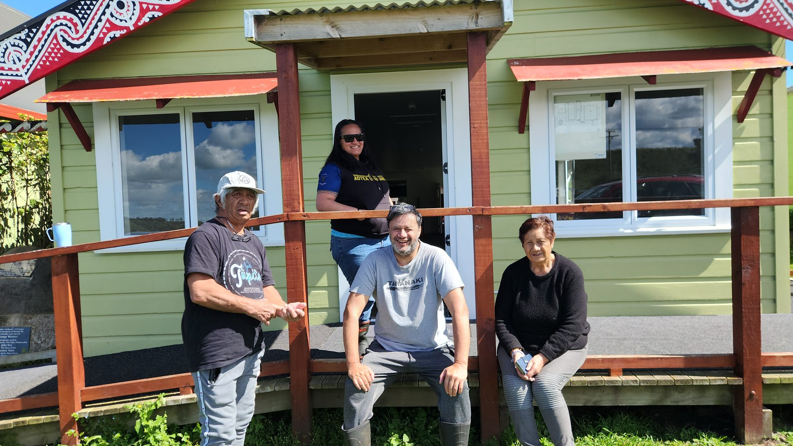

The Live Channel
Our Facebook group is where day-to-day pānui, hui reminders and notices happen as they come to hand. If you're on Facebook, that's the fastest way to stay in the loop.
Anything worth keeping long-term — hui summaries, project updates, progress on the 2050 Plan — will be posted here as durable notices.
Join the Facebook GroupDurable Notices
Kept for the record

Karakia at the pā
Karakia is held at the pā on the first Sunday of every month, 11am. All are welcome — bring your whānau.
Trustee hui
Hui dates and agendas will be posted here as confirmed.
Pariroa Pā 2050
Progress on the 2050 Plan
The trustees report progress on Pariroa Pā 2050 to whānau every year — those reports will be published here, so the whole pā can see how the plan is travelling. Read the plan.